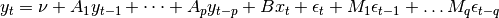
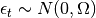
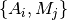

statsmodels.tsa.statespace.varmax.VARMAX¶
-
class
statsmodels.tsa.statespace.varmax.VARMAX(endog, exog=None, order=(1, 0), trend='c', error_cov_type='unstructured', measurement_error=False, enforce_stationarity=True, enforce_invertibility=True, **kwargs)[source]¶ Vector Autoregressive Moving Average with eXogenous regressors model
Parameters: endog : array_like
The observed time-series process
 , , shaped nobs x k_endog.
, , shaped nobs x k_endog.exog : array_like, optional
Array of exogenous regressors, shaped nobs x k.
order : iterable
The (p,q) order of the model for the number of AR and MA parameters to use.
trend : {‘nc’, ‘c’}, optional
Parameter controlling the deterministic trend polynomial. Can be specified as a string where ‘c’ indicates a constant intercept and ‘nc’ indicates no intercept term.
error_cov_type : {‘diagonal’, ‘unstructured’}, optional
The structure of the covariance matrix of the error term, where “unstructured” puts no restrictions on the matrix and “diagonal” requires it to be a diagonal matrix (uncorrelated errors). Default is “unstructured”.
measurement_error : boolean, optional
Whether or not to assume the endogenous observations endog were measured with error. Default is False.
enforce_stationarity : boolean, optional
Whether or not to transform the AR parameters to enforce stationarity in the autoregressive component of the model. Default is True.
enforce_invertibility : boolean, optional
Whether or not to transform the MA parameters to enforce invertibility in the moving average component of the model. Default is True.
kwargs
Keyword arguments may be used to provide default values for state space matrices or for Kalman filtering options. See Representation, and KalmanFilter for more details.
Notes
Generically, the VARMAX model is specified (see for example chapter 18 of [R105]):

where , and where
 is a
k_endog x 1 vector. Additionally, this model allows considering the case
where the variables are measured with error.
is a
k_endog x 1 vector. Additionally, this model allows considering the case
where the variables are measured with error.Note that in the full VARMA(p,q) case there is a fundamental identification problem in that the coefficient matrices  are not generally unique, meaning that for a given time series process there may be multiple sets of matrices that equivalently represent it. See Chapter 12 of [R105] for more informationl. Although this class can be used to estimate VARMA(p,q) models, a warning is issued to remind users that no steps have been taken to ensure identification in this case.
References
[R105] (1, 2, 3) Lutkepohl, Helmut. 2007. New Introduction to Multiple Time Series Analysis. Berlin: Springer. Attributes
order (iterable) The (p,q) order of the model for the number of AR and MA parameters to use. trend ({‘nc’, ‘c’}, optional) Parameter controlling the deterministic trend polynomial. Can be specified as a string where ‘c’ indicates a constant intercept and ‘nc’ indicates no intercept term. error_cov_type ({‘diagonal’, ‘unstructured’}, optional) The structure of the covariance matrix of the error term, where “unstructured” puts no restrictions on the matrix and “diagonal” requires it to be a diagonal matrix (uncorrelated errors). Default is “unstructured”. measurement_error (boolean, optional) Whether or not to assume the endogenous observations endog were measured with error. Default is False. enforce_stationarity (boolean, optional) Whether or not to transform the AR parameters to enforce stationarity in the autoregressive component of the model. Default is True. enforce_invertibility (boolean, optional) Whether or not to transform the MA parameters to enforce invertibility in the moving average component of the model. Default is True. Methods
filter(params, **kwargs)fit([start_params, transformed, cov_type, ...])Fits the model by maximum likelihood via Kalman filter. from_formula(formula, data[, subset])Not implemented for state space models hessian(params, *args, **kwargs)Hessian matrix of the likelihood function, evaluated at the given impulse_responses(params[, steps, impulse, ...])Impulse response function information(params)Fisher information matrix of model initialize()Initialize (possibly re-initialize) a Model instance. initialize_approximate_diffuse([variance])initialize_known(initial_state, ...)initialize_statespace(**kwargs)Initialize the state space representation initialize_stationary()loglike(params, *args, **kwargs)Loglikelihood evaluation loglikeobs(params[, transformed, complex_step])Loglikelihood evaluation observed_information_matrix(params[, ...])Observed information matrix opg_information_matrix(params[, ...])Outer product of gradients information matrix predict(params[, exog])After a model has been fit predict returns the fitted values. prepare_data()Prepare data for use in the state space representation score(params, *args, **kwargs)Compute the score function at params. score_obs(params[, method, transformed, ...])Compute the score per observation, evaluated at params set_conserve_memory([conserve_memory])Set the memory conservation method set_filter_method([filter_method])Set the filtering method set_inversion_method([inversion_method])Set the inversion method set_smoother_output([smoother_output])Set the smoother output set_stability_method([stability_method])Set the numerical stability method simulate(params, nsimulations[, ...])Simulate a new time series following the state space model smooth(params, **kwargs)transform_jacobian(unconstrained[, ...])Jacobian matrix for the parameter transformation function transform_params(unconstrained)Transform unconstrained parameters used by the optimizer to constrained untransform_params(constrained)Transform constrained parameters used in likelihood evaluation to unconstrained parameters used by the optimizer. update(params, **kwargs)Methods
filter(params, **kwargs)fit([start_params, transformed, cov_type, ...])Fits the model by maximum likelihood via Kalman filter. from_formula(formula, data[, subset])Not implemented for state space models hessian(params, *args, **kwargs)Hessian matrix of the likelihood function, evaluated at the given impulse_responses(params[, steps, impulse, ...])Impulse response function information(params)Fisher information matrix of model initialize()Initialize (possibly re-initialize) a Model instance. initialize_approximate_diffuse([variance])initialize_known(initial_state, ...)initialize_statespace(**kwargs)Initialize the state space representation initialize_stationary()loglike(params, *args, **kwargs)Loglikelihood evaluation loglikeobs(params[, transformed, complex_step])Loglikelihood evaluation observed_information_matrix(params[, ...])Observed information matrix opg_information_matrix(params[, ...])Outer product of gradients information matrix predict(params[, exog])After a model has been fit predict returns the fitted values. prepare_data()Prepare data for use in the state space representation score(params, *args, **kwargs)Compute the score function at params. score_obs(params[, method, transformed, ...])Compute the score per observation, evaluated at params set_conserve_memory([conserve_memory])Set the memory conservation method set_filter_method([filter_method])Set the filtering method set_inversion_method([inversion_method])Set the inversion method set_smoother_output([smoother_output])Set the smoother output set_stability_method([stability_method])Set the numerical stability method simulate(params, nsimulations[, ...])Simulate a new time series following the state space model smooth(params, **kwargs)transform_jacobian(unconstrained[, ...])Jacobian matrix for the parameter transformation function transform_params(unconstrained)Transform unconstrained parameters used by the optimizer to constrained untransform_params(constrained)Transform constrained parameters used in likelihood evaluation to unconstrained parameters used by the optimizer. update(params, **kwargs)Attributes
endog_namesNames of endogenous variables exog_namesinitial_varianceinitializationloglikelihood_burnparam_namesstart_paramstolerance